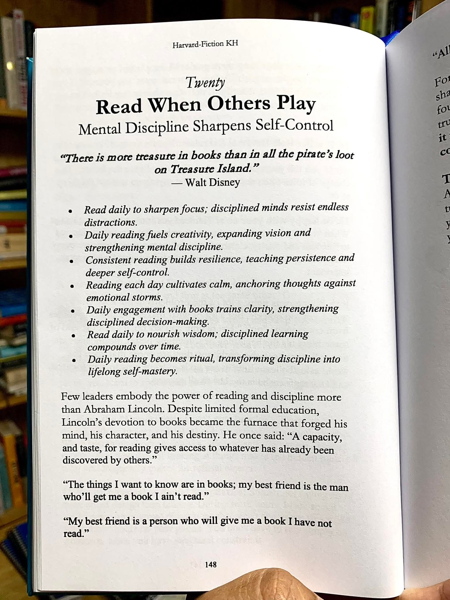

Hujan turun dengan derasnya, menghantam kaca jendela ruangan rapat di lantai tujuh sebuah gedung perkantoran modern di kawasan Dago, Bandung. Suara rintik hujan yang konstan menciptakan latar belakang audio yang monoton, namun menenangkan, kontras dengan ketegangan yang menguar di dalam ruangan tersebut. Udara pendingin ruangan terasa lebih menusuk dari biasanya. Di luar sana, lalu lintas Jalan Ir. H. Juanda dipastikan sedang lumpuh, terjebak dalam kemacetan khas Jumat sore di kota kembang. Namun, bagi keempat orang di dalam ruangan ini, dunia luar seolah tidak eksis. Pikiran mereka tersita oleh kerumitan sistem, aliran material, dan efisiensi waktu.
Ruangan rapat itu tidak terlalu besar, didesain dengan estetika minimalis industrial yang fungsional. Sebuah meja kayu ek panjang mendominasi bagian tengah, dikelilingi oleh kursi-kursi ergonomis yang mahal. Di salah satu dinding, sebuah layar proyeksi raksasa menampilkan diagram alir proses rantai pasok yang sangat kompleks, penuh dengan simpul-simpul keputusan, batasan kapasitas, dan variabel stokastik. Di dinding lainnya, papan tulis putih raksasa dipenuhi dengan coretan persamaan matematis, probabilitas, dan jadwal produksi yang tumpang tindih. Ini adalah markas sementara tim konsultan Teknik Industri dari firma bergengsi yang sedang menangani proyek restrukturisasi logistik untuk sebuah perusahaan manufaktur multinasional.
Keempat individu di ruangan itu adalah representasi dari keunggulan akademis. Mereka semua adalah lulusan program studi Teknik Industri dari perguruan tinggi terkemuka di Bandung, dididik untuk melihat dunia melalui lensa efisiensi, optimasi, dan perbaikan berkelanjutan. Namun, malam ini, keunggulan akademis mereka sedang diuji hingga ke batas maksimal.
Bramantyo, atau yang akrab disapa Bram, duduk di ujung meja. Sebagai Manajer Proyek, pria berusia pertengahan tiga puluhan ini memancarkan aura ketenangan yang mengintimidasi. Kacamata berbingkai kotak bertengger di hidungnya. Alih-alih menatap layar laptop yang menyala di hadapannya, Bram justru sedang khusyuk membaca sebuah buku tebal bersampul keras. Sesekali ia menyesap kopi hitamnya yang sudah mulai mendingin.
Di sebelah kanannya duduk Kirana. Ia adalah analis sistem yang brilian, seorang perempuan muda dengan tatapan tajam dan pikiran yang bekerja seperti algoritma heuristik kelas atas. Rambut hitamnya diikat rapi. Jari-jarinya menari dengan kecepatan luar biasa di atas keyboard, menjalankan simulasi Monte Carlo untuk memprediksi risiko penumpukan persediaan di gudang distribusi regional. Layar laptopnya memantulkan baris-baris kode dan grafik distribusi probabilitas ke wajahnya yang serius.
Berseberangan dengan Kirana, Adrian sang konsultan senior, sedang membolak-balik cetakan biru tata letak pabrik. Keningnya berkerut dalam, mencoba mencari ruang kosong di area perakitan yang tampaknya sudah sangat padat. Adrian adalah tipe orang pragmatis; ia percaya pada data empiris dan observasi lapangan lebih dari sekadar model teoretis.
Dan di ujung lain meja, ada Rizky. Sebagai insinyur junior yang baru bergabung kurang dari setahun, Rizky memiliki energi yang meluap-luap, namun malam ini energi itu tampak habis. Ia bersandar di kursinya, menghela napas panjang berulang kali. Alih-alih fokus pada laporan analisis waktu kerja di hadapannya, pandangan Rizky terpaku pada layar ponsel cerdasnya. Jempolnya terus-menerus menggulir lini masa media sosial, melihat unggahan teman-temannya yang sedang menikmati akhir pekan di kafe-kafe trendi di Ciumbuleuit atau Braga.
"Aku rasa kita berputar-putar di masalah yang sama sejak tiga jam yang lalu," keluh Rizky, memecah kesunyian yang hanya diselingi suara ketikan Kirana dan rintik hujan. Ia meletakkan ponselnya di atas meja dengan sedikit kasar. "Algoritma routing kendaraan yang kita usulkan selalu gagal saat dihadapkan pada fluktuasi permintaan mendadak di kuartal ketiga. Lead time dari supplier bahan baku terlalu variatif. Teman-teman, ini sudah hari Jumat malam. Otakku sudah menolak untuk memproses variabel holding cost."
Adrian menatap Rizky dari balik cetakan birunya. "Ini proyek bernilai miliaran, Rizky. Klien tidak peduli ini hari Jumat malam atau Senin pagi. Jika kita tidak bisa menyajikan solusi untuk mengurangi biaya logistik mereka sebesar lima belas persen minggu depan, reputasi firma kita yang dipertaruhkan."
"Tapi pasti ada jalan pintasnya, kan, Mas Adrian?" bantah Rizky, mencari pembenaran. "Kenapa kita tidak gunakan saja model standar yang kita pakai untuk klien sebelumnya? Tinggal sesuaikan parameternya sedikit. Tidak perlu membangun model simulasi dari nol yang memakan waktu berhari-hari. Kita menghabiskan terlalu banyak waktu untuk merenung dan menganalisis hal-hal yang mungkin tidak akan terjadi."
Kirana berhenti mengetik. Ia memutar layar laptopnya sehingga grafik lonjakan risiko terlihat jelas oleh Rizky. "Model standar tidak akan berfungsi di sini, Rizky. Karakteristik permintaannya berbeda. Jika kita memaksa menggunakan jalan pintas, simulasi menunjukkan akan terjadi stockout parah pada bulan kesembilan yang akan menghentikan lini produksi mereka selama tiga hari. Biaya kerugiannya jauh lebih besar daripada sekadar holding cost. Ini bukan soal merenung tanpa arah, ini soal disiplin mental untuk melihat masalah secara komprehensif, bukan parsial."
Rizky mendengus pelan, meraih ponselnya kembali. "Disiplin mental. Itu kata-kata yang bagus untuk diucapkan, tapi praktiknya membuat kita terkunci di ruangan dingin ini sementara orang lain di luar sana sedang bersantai."
Bramantyo, yang sedari tadi diam, perlahan menutup bukunya. Ia melepaskan kacamatanya dan memijat pangkal hidungnya. Sikap tubuhnya tenang, namun sorot matanya tajam saat menatap insinyur mudanya itu.
"Rizky," suara Bram berat dan bertenaga, mengisi seluruh sudut ruangan. "Apakah kamu tahu mengapa kita, para insinyur Teknik Industri, sering kali harus bekerja lebih lambat di awal, membangun model yang rumit, dan membaca ribuan halaman jurnal sebelum memutuskan sebuah tata letak sederhana?"
Rizky terdiam, merasa tertangkap basah sedang mengeluh. "Untuk... meminimalkan kesalahan implementasi, Pak?"
"Itu adalah hasil teknisnya," jawab Bram. "Tetapi fondasinya adalah sesuatu yang lebih mendalam. Ini tentang pengendalian diri. Tentang menajamkan pikiran saat godaan untuk mencari jalan pintas atau menyerah begitu besar."
Bram mengangkat buku yang sedang dibacanya. Kemudian, ia mengambil selembar cetakan kertas dari dalam map di sebelahnya dan meletakkannya di tengah meja. Itu adalah sebuah pindaian dari halaman sebuah buku.

Keempat pasang mata di meja itu kini tertuju pada gambar pindaian tersebut. Judulnya tercetak jelas: Read When Others Play. Mental Discipline Sharpens Self-Control (Membaca Saat yang Lain Bermain. Disiplin Mental Menajamkan Pengendalian Diri).
Kirana membacakan kutipan yang ada di bawah judul tersebut dengan suara pelan namun terdengar jelas, "'There is more treasure in books than in all the pirate's loot on Treasure Island.' Walt Disney. Ada lebih banyak harta karun di dalam buku daripada semua rampasan bajak laut di Pulau Harta Karun."
"Aku menemukan halaman ini beberapa tahun lalu saat aku sedang berada di posisimu, Rizky," Bram mulai bercerita. "Malam minggu, hujan deras, terkurung di kantor merevisi perhitungan penjadwalan mesin yang terus-menerus meleset. Aku ingin menyerah. Aku ingin keluar dan bermain seperti yang lain. Lalu atasanku saat itu, seorang insinyur senior yang sangat kuhormati, memberikan tulisan ini padaku."
Bram menunjuk pada poin pertama di gambar tersebut. "Baca poin pertama, Rizky."
Rizky mencondongkan tubuhnya, membaca tulisan miring di kertas itu. "Read daily to sharpen focus; disciplined minds resist endless distractions. Membaca setiap hari untuk menajamkan fokus; pikiran yang disiplin menolak gangguan yang tak berkesudahan." Rizky secara tidak sadar menjauhkan tangannya dari ponsel cerdasnya.
"Gangguan yang tak berkesudahan," ulang Kirana, menatap lurus ke arah Rizky. "Itulah masalah utamamu hari ini. Pikiranmu terpecah antara mencari solusi untuk lead time supplier dan melihat apa yang sedang terjadi di media sosial. Membangun model sistem dinamis membutuhkan fokus absolut. Ketika kita membaca literatur teknis atau bahkan buku filsafat yang berat, kita sedang melatih otak kita untuk bertahan pada satu jalur pemikiran tanpa melompat ke stimulus yang lebih mudah."
Adrian mengangguk setuju. "Di dunia industri modern, di mana data mengalir sangat cepat, kemampuan untuk membedakan antara 'sinyal' dan 'kebisingan' adalah kunci. Jika kamu tidak memiliki fokus yang tajam, kamu akan bereaksi terhadap setiap variasi kecil dalam sistem seolah-olah itu adalah krisis besar, dan kamu akan gagal melihat tren jangka panjang yang sebenarnya menjadi akar masalah."
Bram melanjutkan ke poin berikutnya. "Daily reading fuels creativity, expanding vision and strengthening mental discipline. Membaca setiap hari memicu kreativitas, memperluas visi, dan memperkuat disiplin mental. Banyak yang mengira Teknik Industri itu kaku, hanya soal angka dan stopwatch. Padahal, merancang tata letak pabrik yang mengintegrasikan ergonomi pekerja, pergerakan robotik, dan efisiensi ruang membutuhkan tingkat kreativitas tingkat tinggi. Kreativitas itu tidak muncul dari kehampaan. Ia muncul dari penggabungan ide-ide yang kita dapatkan dari berbagai sumber yang kita baca."
"Tepat," sahut Kirana antusias. "Minggu lalu aku terjebak pada masalah alokasi sumber daya. Solusinya kutemukan bukan dari buku teks riset operasi, melainkan dari sebuah jurnal tentang bagaimana semut mencari makan dan menemukan jalur terpendek. Konsep Ant Colony Optimization itu membuka visiku. Jika aku hanya berpegang pada metode yang biasa, kita tidak akan bisa menurunkan biaya transportasi klien sebesar yang kita targetkan."
Rizky tampak mulai meresapi percakapan itu. Rasa frustrasinya perlahan memudar, digantikan oleh rasa ingin tahu. "Jadi, maksud Bapak dan Mbak Kirana, membaca bukan sekadar mencari informasi langsung yang bisa diaplikasikan, melainkan melatih otot otak kita?"
"Tepat sekali," kata Bram. Ia menunjuk poin ketiga dan keempat. "Consistent reading builds resilience, teaching persistence and deeper self-control. Reading each day cultivates calm, anchoring thoughts against emotional storms. Konsistensi membangun ketangguhan, mengajarkan kegigihan dan kendali diri yang lebih dalam. Membaca menumbuhkan ketenangan, menambatkan pikiran saat menghadapi badai emosional."
Bram bersandar, melipat kedua tangannya di dada. "Ketika simulasi kita gagal untuk yang kesepuluh kalinya, badai emosional itu datang, bukan? Rasa ingin marah, menyalahkan data yang tidak akurat, menyalahkan klien yang tidak tahu apa yang mereka inginkan. Itu manusiawi. Tetapi sebagai profesional yang dibayar untuk menyelesaikan masalah, kita tidak bisa membiarkan emosi mengendalikan proses pengambilan keputusan. Disiplin yang terbentuk dari kebiasaan duduk berjam-jam membaca buku teks yang sulit, menahan kebosanan demi memahami satu bab tentang probabilitas Markov Chain, itulah yang menambatkan kita. Ketenangan itu yang membuat Kirana bisa melihat anomali data tanpa panik, dan membuat Adrian bisa merombak tata letak dengan kepala dingin."
Adrian tersenyum tipis. "Percayalah, Rizky. Menghadapi dewan direksi klien yang marah karena target produksi tidak tercapai itu jauh lebih menegangkan daripada ujian kalkulus manapun. Jika kamu tidak memiliki ketenangan batin, kamu akan hancur di ruang rapat mereka."
Hujan di luar tampaknya mulai mereda, namun percakapan di dalam ruangan semakin mendalam. Mereka bukan lagi sekadar empat insinyur yang kelelahan, melainkan sekelompok pemikir yang sedang merefleksikan etos kerja mereka.
Bram menunjuk bagian bawah dari gambar pindaian tersebut. "Lihat paragraf di bawah poin-poin itu. Bagian tentang Abraham Lincoln."
Rizky membacanya perlahan. "Few leaders embody the power of reading and discipline more than Abraham Lincoln. Despite limited formal education, Lincoln's devotion to books became the furnace that forged his mind, his character, and his destiny. He once said: 'A capacity, and taste, for reading gives access to whatever has already been discovered by others.'"
"Lincoln memimpin sebuah negara melewati masa paling gelap dan paling memecah belah dalam sejarah mereka, yaitu Perang Saudara," Bram menjelaskan, suaranya mengandung penghormatan. "Keputusan-keputusannya sangat berat. Jutaan nyawa dipertaruhkan. Dari mana ia mendapatkan kebijaksanaan untuk bertahan dan mengambil keputusan yang tepat? Dari disiplin membaca. Ia tidak memiliki pendidikan formal yang tinggi seperti kita. Ia tidak punya gelar sarjana Teknik dari universitas top di Bandung. Tetapi dedikasinya pada buku menjadi tungku perapian yang menempa pikiran dan karakternya."
Bram menatap lurus ke mata Rizky. "Kita saat ini diuntungkan oleh pendidikan formal. Kita tahu cara menghitung OEE (Overall Equipment Effectiveness), kita tahu cara merancang diagram Fishbone, kita paham prinsip-prinsip Lean Manufacturing. Tetapi jika kita tidak memiliki 'tungku perapian' berupa disiplin mental untuk terus belajar mandiri, untuk membaca ketika orang lain memilih untuk bersantai, pengetahuan teknis itu akan usang dalam lima tahun. Teknologi berubah, sistem berkembang."
Kirana menambahkan, "Kutipan Lincoln di situ sangat relevan dengan pekerjaan kita. 'Sebuah kapasitas, dan selera, untuk membaca memberikan akses ke apa pun yang telah ditemukan oleh orang lain.' Mengapa kita harus menghabiskan waktu berminggu-minggu mencoba menemukan solusi dari nol jika seseorang di belahan dunia lain mungkin telah menerbitkan jurnal tentang bagaimana mereka menyelesaikan masalah bottleneck persis seperti yang kita hadapi? Membaca literatur menghindarkan kita dari kebodohan menciptakan ulang roda."
Rizky menatap layar laptopnya yang sedari tadi diabaikannya. Laporan analisis waktu kerja yang sempat membuatnya muak kini terlihat berbeda. Itu bukan sekadar angka-angka yang membosankan, melainkan potongan puzzle dari sebuah masalah besar yang menantang kapasitas intelektualnya.
"Poin terakhir dari gambar itu," kata Adrian, memecah perenungan Rizky. "Daily reading becomes ritual, transforming discipline into lifelong self-mastery. Membaca setiap hari menjadi ritual, mengubah disiplin menjadi penguasaan diri seumur hidup."
Adrian menggulung cetakan birunya. "Penguasaan diri. Itulah tujuan akhirnya, Rizky. Saat kamu bisa menguasai dirimu sendiri—menguasai rasa malasmu, menguasai keinginanmu untuk mencari jalan pintas, menguasai emosimu saat menghadapi kegagalan—saat itulah kamu benar-benar menjadi insinyur yang ahli. Kamu tidak lagi dikendalikan oleh sistem; kamu yang merancang dan mengendalikan sistem."
Suasana hening sejenak. Hanya dengungan samar dari proyektor yang terdengar. Pesan dari selembar kertas pindaian itu telah meresap, mengubah frekuensi energi di dalam ruangan tersebut.
"Lalu, apa yang dikatakan Lincoln di akhir teks itu?" tanya Kirana retoris, senyum tipis mengembang di bibirnya. "'The things I want to know are in books; my best friend is the man who'll get me a book I ain't read.' Hal-hal yang ingin kuketahui ada di dalam buku; sahabat terbaikku adalah orang yang memberiku buku yang belum kubaca."
Bram tersenyum, senyum yang jarang ia perlihatkan saat sedang bekerja. "Aku mungkin bukan sahabat terbaikmu, Rizky. Aku atasan yang menuntut banyak hal darimu. Tetapi aku memberikanmu selembar teks ini hari ini, berharap ini bisa memicu sesuatu di dalam dirimu."
Rizky terdiam cukup lama. Ia menatap ponsel cerdasnya yang tergeletak pasif di atas meja, lalu menatap gambar pindaian "Read When Others Play" tersebut. Perlahan, ia mengambil ponselnya, menekan tombol daya untuk mematikannya secara total, dan memasukkannya ke dalam saku tasnya.
"Pak Bram, Mbak Kirana, Mas Adrian," kata Rizky, suaranya kini terdengar lebih mantap, kehilangan nada keluhan yang sebelumnya mendominasi. "Saya minta maaf. Saya kehilangan fokus. Saya membiarkan frustrasi mengalahkan disiplin kerja saya."
Rizky menarik kursinya mendekat ke meja, membuka buku catatannya yang sedari tadi tertutup, dan mengambil pena. Ia menatap layar proyektor yang menampilkan diagram rantai pasok yang rumit itu dengan pandangan baru yang lebih tajam.
"Mbak Kirana," ujar Rizky, "kembali ke masalah fluktuasi permintaan di kuartal ketiga dan lead time supplier yang variatif tadi. Saya baru ingat, beberapa minggu lalu saya pernah membaca sekilas sebuah artikel tentang implementasi VMI (Vendor Managed Inventory) yang digabungkan dengan sistem kontrak fleksibel. Awalnya saya pikir itu tidak bisa diterapkan karena budaya supplier lokal di sini berbeda. Tetapi, jika kita memodifikasi model pembagian risiko-nya..."
Mata Kirana berbinar. "Vendor Managed Inventory? Tunggu, jika kita menggeser tanggung jawab persediaan penyangga ke supplier tier pertama, kita bisa mengurangi holding cost klien kita secara drastis."
Adrian segera membuka kembali cetakan birunya. "Dan jika ruang gudang bahan baku tidak perlu sebesar itu karena sistem VMI, kita bisa mengonversi sebagian area gudang menjadi stasiun perakitan tambahan. Itu akan menyelesaikan masalah bottleneck kapasitas yang kucari-cari dari tadi!"
Bramantyo mengangguk puas. Ia meraih spidol whiteboard dan berjalan menuju papan tulis raksasa yang penuh dengan coretan. "Baiklah. Mari kita bedah ide ini. Rizky, jelaskan secara spesifik bagaimana model pembagian risiko pada kontrak VMI yang kamu baca tersebut. Kirana, siapkan parameter baru untuk simulasi Monte Carlo berdasarkan asumsi lead time yang dikendalikan oleh vendor. Adrian, buat perkiraan kasar berapa meter persegi luasan area yang bisa kita bebaskan."
Ruangan rapat itu kembali hidup, tetapi dengan energi yang sama sekali berbeda. Bukan lagi energi keputusasaan yang melelahkan, melainkan energi kreasi yang bergelora. Suara hujan di luar gedung tidak lagi terdengar seperti kurungan, melainkan menjadi melodi pengiring simfoni pemecahan masalah.
Rizky mulai menjelaskan konsep yang dibacanya, menggali ingatannya, merangkai informasi yang pernah ia serap. Sesekali ia masih tersendat, mencoba merumuskan logika matematis dari konsep tersebut, namun Kirana dengan cekatan membantunya memformulasikan persamaan tersebut ke dalam bahasa pemrograman simulasi. Adrian memberikan kritik praktis, memastikan setiap asumsi teoretis memiliki dasar di dunia nyata lantai pabrik.
Bram berdiri di depan papan tulis, menjadi konduktor dari orkestra pemikiran ini. Setiap kali diskusi mulai melenceng, ia dengan tenang mengarahkan kembali fokus tim, mengingatkan mereka pada tujuan utama. Ia adalah perwujudan dari poin kelima tulisan di kertas tadi: Daily engagement with books trains clarity, strengthening disciplined decision-making. (Keterlibatan harian dengan buku melatih kejernihan, memperkuat pengambilan keputusan yang disiplin). Ketenangan dan kejernihan pikiran Bram menjadi jangkar bagi timnya.
Waktu berlalu tanpa terasa. Jarum jam menunjukkan pukul sepuluh malam. Hujan di luar telah sepenuhnya reda, menyisakan udara malam Bandung yang dingin dan jalanan aspal yang basah memantulkan cahaya lampu kota. Di dalam ruangan di lantai tujuh itu, sebuah solusi telah lahir.
Kirana menekan tombol Enter untuk menjalankan simulasi terakhir dengan parameter yang telah direvisi secara radikal. Layar laptopnya berkedip sejenak, memproses ribuan iterasi probabilitas dalam hitungan detik. Keempat orang itu menahan napas, menatap grafik hasil simulasi yang muncul di layar proyektor.
Garis merah yang melambangkan tingkat persediaan tidak pernah menyentuh titik nol (stockout) maupun melampaui batas kapasitas maksimal gudang. Sebaliknya, garis itu bergerak dinamis namun stabil di dalam batas kendali optimal. Dan yang paling penting, angka indikator Total Logistics Cost di sudut kanan atas layar menunjukkan penurunan sebesar 18,5% dibandingkan desain awal.
Keheningan pecah oleh helaan napas panjang yang melegakan dari keempatnya secara bersamaan.
"Kita berhasil," bisik Kirana, senyum lebar menghiasi wajahnya yang lelah. "Angka penurunannya bahkan melampaui target lima belas persen dari klien."
Adrian menepuk bahu Rizky dengan keras. "Kerja bagus, anak muda. Ide tentang modifikasi VMI itu menyelamatkan kita malam ini. Terbukti, kan, otakmu belum sepenuhnya menolak variabel logistik."
Rizky tersenyum malu namun bangga. "Terima kasih, Mas. Kalau bukan karena... peringatan tadi, saya mungkin tidak akan memaksa diri untuk mengingat artikel jurnal itu. Saya baru sadar, membaca tanpa disiplin untuk memikirkannya kembali saat dibutuhkan sama saja dengan tidak membaca."
Bramantyo meletakkan spidolnya dan berjalan kembali ke mejanya. Ia merapikan kertas-kertas kerjanya. "Ini adalah contoh nyata, Rizky, bahwa penyelesaian masalah tingkat tinggi jarang sekali berasal dari pencerahan tiba-tiba tanpa dasar. Pencerahan itu adalah hasil panen dari benih-benih informasi yang kita tanam setiap hari melalui bacaan kita, yang kemudian disirami dengan disiplin dan ketekunan saat kita menolak untuk menyerah."
Bram mengambil pindaian kertas "Read When Others Play" tersebut, melipatnya rapi, dan menyodorkannya ke arah Rizky.
"Ambil ini," kata Bram. "Tempelkan di kubikelmu atau selipkan di dalam buku catatanmu. Jadikan pengingat saat kamu tergoda untuk memilih hiburan sesaat di atas pengembangan dirimu. Ingat, profesi kita menuntut kita untuk menjadi arsitek efisiensi bagi bisnis orang lain. Kita tidak akan pernah bisa melakukan itu dengan baik jika kita tidak efisien dalam mengelola pikiran kita sendiri."
Rizky menerima kertas itu dengan kedua tangannya seolah menerima sebuah benda berharga. "Terima kasih, Pak Bram. Saya akan mengingat pelajaran malam ini."
Kirana mulai mematikan laptopnya. "Baiklah, karena kita sudah mendapatkan dasar solusi yang sangat kuat, kita bisa menyusun laporannya besok dengan kepala yang lebih segar. Aku rasa kita semua pantas mendapatkan istirahat malam ini."
Keempat insinyur itu mulai membereskan barang-barang mereka. Ketegangan yang sebelumnya memenuhi ruangan kini telah menguap, digantikan oleh rasa pencapaian yang mendalam dan kepuasan intelektual. Mereka mematikan lampu ruangan, melangkah keluar menuju lorong yang sepi, dan menunggu lift untuk turun.
Saat pintu lift terbuka di lantai dasar, udara malam Bandung menyambut mereka. Udara khas setelah hujan yang bersih dan menggigit. Mereka berjalan menuju area parkir. Rizky melihat ke arah jalan raya; lalu lintas sudah kembali lancar. Kafe-kafe mungkin masih ramai, orang-orang masih tertawa dan bermain.
Namun kali ini, Rizky tidak merasa tertinggal atau merugi. Sambil merogoh saku kemejanya di mana selembar kertas berharga itu tersimpan aman, ia menyadari kebenaran dari apa yang baru saja ia alami. Sementara banyak orang menghabiskan waktu berjam-jam malam ini untuk mencari hiburan tanpa arah, ia dan timnya telah menajamkan pikiran mereka, memecahkan masalah kompleks, dan menciptakan nilai yang nyata. Mereka telah mempraktikkan penguasaan diri.
Rizky menyadari bahwa di dunia teknik dan profesionalisme, mereka yang memimpin bukanlah mereka yang paling sering bermain, melainkan mereka yang memiliki disiplin untuk membaca, belajar, dan berpikir secara mendalam saat orang lain memilih untuk mengalihkan pandangan. Pikiran yang disiplin, seperti kata tulisan itu, memang menajamkan kendali diri, dan kendali diri adalah kunci untuk merancang tidak hanya sistem industri yang baik, tetapi juga masa depan yang gemilang.